AI Academy · Level 1 · Grade 6 · Week 24 · Student lesson
Privacy by Choosing Less
Learn to understand, design, build, test and explain AI systems responsibly.
Project: Helpful Classroom Sorter
Before you start
Week 19: preferences can be represented by selected book traits.
Plan time to read, investigate and explain. Keep predictions separate from observations.
Student lesson · 1 of 18
Your mission
Start with the target: Justify which information a stated task needs and remove unnecessary fields. Try the recall before opening notes.
Your learning target
I can justify which information a stated task needs and remove unnecessary fields.
I can distinguish reducing personal data from hiding a name.
I can design a simple access, retention and deletion plan for a classroom activity.
Remember before reading
Close your notes first. A rough first answer helps us choose the right starting point; it is not a score for your ability.
Without opening the old lesson, explain one key idea from Fair for Whom?. Give an example and a mistake that the idea helps you avoid.
Without opening the old lesson, explain one key idea from Good Data, Bad Data. Give an example and a mistake that the idea helps you avoid.
Without opening the old lesson, explain one key idea from Confidence Is Not Correctness. Give an example and a mistake that the idea helps you avoid.
After trying, check the relevant lesson or ask your teacher. Change the part of your explanation that the evidence shows was wrong.
A useful system should collect only information it truly needs.
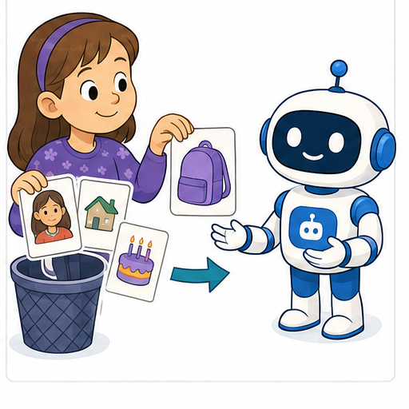
Your target
LEARNING TARGET A book recommender requests genre, maximum pages, home address and a selfie. Keep only fields needed for genre and length matching. Explain one consequence of storing extra fields.
Learner name:
Readiness for the connected explanation
A report needs the number of correct answers out of 20 fictional test cards. Does that calculation require a student’s name or home address? Explain.
This week’s end goal
By the end, I can collect only information necessary for a stated task and explain coded-record limits.
Student lesson · 2 of 18
Notice the evidence
Investigate the supplied Privacy by Choosing Less case. Separate observations, given facts and assumptions before choosing an explanation.
PICTURE STORY
Look Closely Before You Explain
Pictures give clues; evidence tells us what the clues mean.

Start with this puzzle
MYSTERY A lunch helper needs food preferences and allergy information for its task, not a face photo, home address, or family income.
What do you notice?
Name three visible details without explaining them yet.
Circle the detail most connected to the system's decision.
Name one detail that may be decoration or distraction.
Make a first prediction and state the clue that supports it.
My observations, prediction, and evidence:
Thinking habit
GOOD THINKING A prediction can change when stronger evidence appears.
A closer explanation
Privacy includes having appropriate boundaries around information about people. A useful first question is: what exact job are we trying to do? A second is: what is the least information that can do that job?
Collecting extra details just because a form has room for them creates more information to protect.
Our fictional class wants to choose one of three workshop topics for Friday: drawing, music or coding. It needs a total for each topic, not a list of who chose what.
Each fictional pupil gets one paper slip and marks one topic. No real class survey is needed for this lesson. The teacher counts the choices and uses the largest total; a tie goes to a class discussion.
A proposed form asks for name, full date of birth, home address, photograph and topic choice. For the stated counting task only the topic choice is needed. Remove the other fields before collection.
Do not fill them in and promise to ignore them later. If the purpose changes to individual attendance, design and justify that separate task with the teacher rather than silently reusing the survey.
Student lesson · 3 of 18
See how it works
Follow the mechanism for Privacy by Choosing Less. Connect each labelled input, deciding step and result.
VISUAL MECHANISM
Input → Process → Output
Follow the information instead of imagining magic inside the machine.
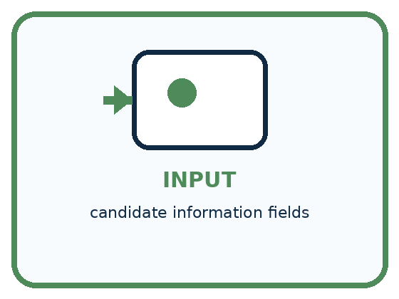
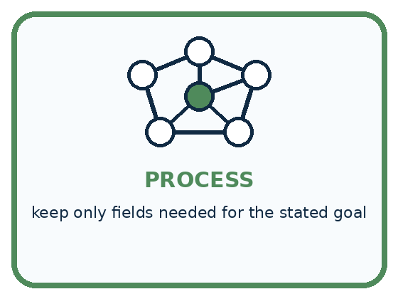
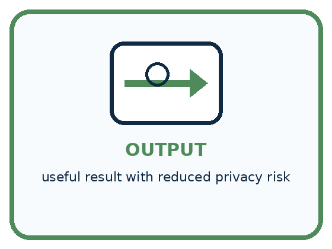
INPUT candidate information fields
PROCESS keep only fields needed for the stated goal
OUTPUT useful result with reduced privacy risk
Key idea
CORE IDEA A useful system should collect only information it truly needs.
How the mechanism works
UNDER THE HOOD Data minimization limits collection, access, retention, and reuse to what is necessary for a defined purpose.
Less data reduces breach exposure and misuse, but essential high-stakes information still needs secure, consent-aware handling.
Draw a fresh example with all three stages:
A closer explanation
A small information plan for a fictional vote
Suppose the fictional counts are drawing 8, music 7 and coding 5. These totals support the choice of drawing. There is no need to publish each slip or a photograph of a child holding it.
The teacher checks the total of 20 against the number of slips and then follows the agreed school process for disposing of the slips after verification.
A retention plan needs a clear trigger and a responsible person: for example, the teacher disposes of the fictional vote slips after the totals are checked and the activity closes.
Real classroom records must follow the school’s approved process. Deleting one visible copy does not prove that every backup, screenshot or previously shared copy is gone.
Connect the picture and the explanation
Point to the input, the deciding step and the result in this week’s visual. Explain the same step in ordinary words. A picture helps when you can say what each part represents.
Student lesson · 4 of 18
Compare the cases
Compare the supplied cases for Privacy by Choosing Less. Identify the detail that changes the conclusion.
PICTURE GALLERY
Four Cases, Four Clues
Use the visual cue, then read the evidence carefully.
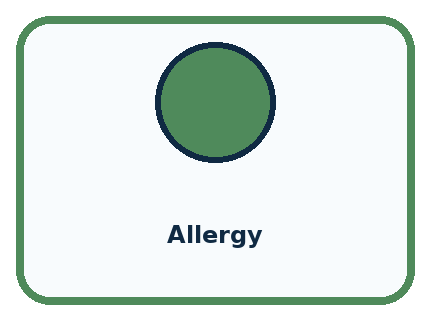
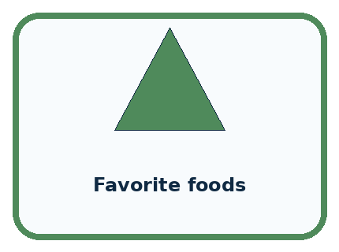
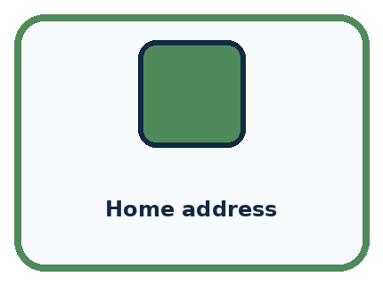
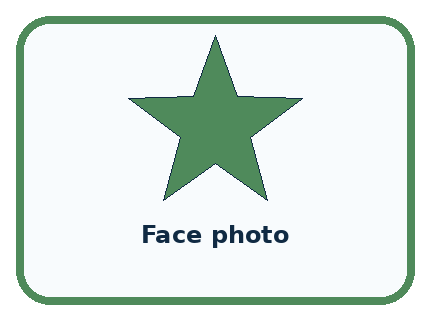
The case to investigate
CASE 1 — Allergy Clue: needed for safe lunch filter. Meaning: relevant sensitive data.
The case to investigate
CASE 2 — Favorite foods Clue: useful for preference. Meaning: optional relevant data.
The case to investigate
CASE 3 — Home address Clue: not needed. Meaning: remove.
The case to investigate
CASE 4 — Face photo Clue: not needed for menu choice. Meaning: remove.
Keep this boundary clear
BOUNDARY Useful does not mean permitted forever or for every new purpose.
Which two pictures are easiest to confuse? What evidence separates them?
Change one thing in the pictured case
Change one thing
Change: The teacher adds an authorised task to return one repaired tool to its borrower.
Predicted result
Prediction: A minimal contact mechanism may now be needed for that tool.
Why the result follows
Reason: The purpose changed; reassess necessity rather than restoring every old field.
Student lesson · 5 of 18
Words that unlock the idea
Use the vocabulary of Privacy by Choosing Less to explain a concrete decision, rather than only memorising definitions.
VOCABULARY
Words You Can See and Use
The badge is a memory cue; the definition does the real thinking work.
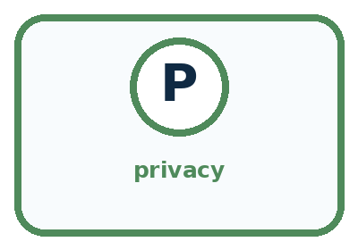
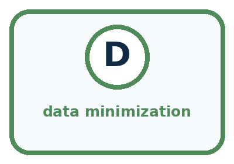
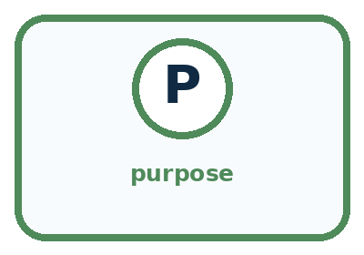
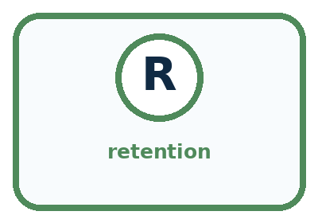
| Word | Meaning | My example |
|---|---|---|
| privacy | control and protection of information about people | |
| data minimization | collecting only what the purpose requires | |
| purpose | specific reason information is used | |
| retention | how long information is kept |
Misconception detective
Find the unsupported claim
CLAIM TO REPAIR Collect data now in case it becomes useful later.
Use one vocabulary word and one piece of evidence to repair it:
WORD POWER A strong definition helps you decide something in a new case.
Words used in the closer explanation
| Word | Meaning |
|---|---|
| Personal data | Information about an identifiable person, including combinations that can identify someone |
| Data minimisation | Using only the information needed for a stated purpose |
| Access control | A rule and mechanism deciding who can see or use information |
Student lesson · 6 of 18
Follow a worked example
Follow the worked trace for Privacy by Choosing Less, predict a step, then compare with its explanation.
WORKED EXAMPLE
Watch the Reasoning, Not Just the Answer
Every step connects a claim to observable evidence.

The case to investigate
CASE A lunch helper needs food preferences and allergy information for its task, not a face photo, home address, or family income.
Step 1
STEP 1 — OBSERVE candidate information fields
Step 2
STEP 2 — TRACE keep only fields needed for the stated goal
Step 3
STEP 3 — CONCLUDE useful result with reduced privacy risk
Model answer
MODEL REASONING Keep only information required for safety and stated preferences, allow a person to provide or update it, restrict access, and delete it when the purpose ends.
Explain why each removed field adds risk without benefit.
A claim to avoid
DO NOT OVERCLAIM Useful does not mean permitted forever or for every new purpose.
What new evidence could change this answer?
A closer explanation
| Proposed change | What it changes | What still needs thought |
|---|---|---|
| Replace a name with P07 | Hides the name on this sheet | A separate key can reconnect the code |
| Remove names but keep photos | Removes one identifying field | Faces may still identify people |
| Share topic totals only | Removes individual rows | Small or unusual groups may still reveal a choice |
Worked explanation · Privacy by Choosing Less
A code is not a promise of anonymity. If a teacher keeps a key connecting P07 to a pupil, the coded record can still be linked to that pupil.
Even without a key, a combination such as an exact birthday, a team and a photograph may identify someone. Ask whether a reader could connect the information to a person, not just whether the name column is blank.
Worked explanation · Privacy by Choosing Less
Totals also need context. A report saying that the only member of a tiny club chose music reveals that member’s choice.
Our whole-class topic totals reveal less detail than individual rows, but we should not describe every possible total as automatically anonymous. Share only what the audience needs for the purpose.
Learn from the worked case
Cover the result before checking it. Say what is given, choose the procedure, and follow one step at a time. Then uncover the result and explain your first mismatch. Ask why a step is allowed, not only what number it produces.
A pictorial worked case: Privacy by Choosing Less
A fictional teacher wants to count broken craft tools by type, without contacting borrowers.
The facts we will use
Supplied facts
Needed output: totals for scissors, ruler and hole-punch repairs.
Supplied facts
Draft form requests pupil name, birthday, tool type and repair-needed Yes/No. No borrower follow-up is required.

Read the picture one step at a time
Why this result follows
Why the result follows
A field is justified by what the task needs to do, not by whether it might become useful someday. Names and birthdays do not help these repair totals.
Replacing names with codes still leaves linked personal records if someone keeps a name-code key; collecting less can remove the need for that link entirely.
What this example does not establish
Keep the stated limit
Removing these fields is not a universal guarantee of anonymity or permission to collect other identifying combinations.
Keep the stated limit
Read the labelled picture: For the original task, does adding an anonymous-looking pupil code improve the repair count?
Keep the stated limit
Change one thing: The teacher adds an authorised task to return one repaired tool to its borrower. Predict the result before checking the explanation. What remains the same?
Student lesson · 7 of 18
Find and repair a mistake
Find the unsupported step in the Privacy by Choosing Less claim and explain a repair using the supplied evidence.
COMPARE
Same Result, Different Reason
A comparison helps reveal the true concept boundary.
| Case | Evidence | What it shows |
|---|---|---|
| Allergy | needed for safe lunch filter | relevant sensitive data |
| Favorite foods | useful for preference | optional relevant data |
| Home address | not needed | remove |
| Face photo | not needed for menu choice | remove |
Repair two tempting claims
Challenge claim A
CLAIM A Collect data now in case it becomes useful later.
Repair:
Challenge claim B
CLAIM B Removing names makes all data anonymous and safe.
Repair:
A frame for explaining
STRONG ANSWER FRAME I claim ______ because the evidence shows ______. The process is ______. One limit is ______.
A closer explanation
Check the claim against the facts
A useful data plan answers five questions: what is the purpose; which fields are necessary; who needs access; what result will be shared; and when will the source information be disposed of under the agreed process?
It also names who is responsible. “Keep everything safe forever” answers neither the collection question nor the retention question.
Check the claim against the facts
If you accidentally share personal information, stop sharing it and tell the teacher or another trusted adult promptly. Do not repost it to ask classmates for help.
An adult can follow the school’s process and decide what action is appropriate. Avoid promising that deleting a message has removed every copy.
Student lesson · 8 of 18
Practise together
Practise Privacy by Choosing Less with support, then explain the deciding step in your own words.
GUIDED PRACTICE
Try It, Check It, Explain It
Use support now so you can succeed independently later.

Explain how the picture story demonstrates this idea: A useful system should collect only information it truly needs.
Use a fresh example to explain privacy.
Trace a new input → process → output example.
Find and repair the error in: Removing names makes all data anonymous and safe.
Invent one edge case and name the safe response.
Check with a partner
PARTNER CHECK Point to the evidence. Do not accept an answer that only repeats the vocabulary word.
A closer explanation
An AI tool is another place where information may be sent. Before using it for schoolwork, follow the teacher’s approved tool and data rules.
Do not paste real names, contact details, photos, passwords or private messages into an unapproved service. For this lesson, use the provided fictional counts or work entirely on paper.
An AI tool is not needed to add 8 + 7 + 5.
A student may need the lesson and their own work; a teacher may need restricted teaching records. Access should match these jobs. A hidden link or a hard-to-guess filename is not a substitute for an access check.
When information is shared more widely, it may be copied beyond the original audience. Decide the audience before sharing.
Practise with less help: Challenge a claim of anonymity
Use workbook W2 for the connected example “Privacy and data minimisation”. First fill the input and rule boxes. Try the middle steps before asking for a hint. After a hint, try the next step yourself.
| Plan | Do | Check |
|---|---|---|
| What is given? Which rule or procedure applies? | Record each intermediate step. | Does the result follow? What remains unknown? |
Explain your trace to a partner. Your partner points to one step to check. Swap roles on the next case. Each person writes their own explanation.
Check your reasoning
Use the worked case for Privacy and data minimisation. Proposed explanation: “More data always improves a task”. Decide whether this explanation is supported.
Point to the step or supplied fact that decides; explain your repair if needed.
Answer on your own before discussion. If you are unsure, say which step you need help with.
Explain the picture
For the original task, does adding an anonymous-looking pupil code improve the repair count?
This is supported practice. Keep the separately named independent case for an attempt before feedback.
Student lesson · 9 of 18
Run the investigation
Investigate Privacy by Choosing Less. Record the prediction, actual observation or labelled paper trace, explanation and next test separately.
EXPLORER LAB
Too-Much-Data Redesign
Predict first, test honestly, and explain what the evidence means.

1. Predict
State your prediction before the result is known.
2. Investigate
Complete the task: Redesign a lunch helper that asks for too much personal data.
3. Compare cases
Keep a normal case and an edge case clearly separated.
4. Record honestly
Record what happened—even when it does not match your prediction.
5. Explain and plan the next test
Explain the result, one limitation, and the next useful test.
| Case | Prediction | Observed result | What it means |
|---|---|---|---|
| Normal | |||
| Edge |
Use a fresh case after support
INDEPENDENCE After support is removed, repeat the proof with a fresh case.
Plan → try → check
Before trying: what do I expect, and why? While trying: which step could first go wrong? Afterwards: what did I actually observe, and what should change? Keep “not run” if you only traced the procedure.
Student lesson · 10 of 18
Build your understanding
Move from recall to tracing, diagnosis and transfer in Privacy by Choosing Less. Explain why each step is justified.
PRACTICE LADDER
Climb from Recall to Defense
Each step asks for a stronger kind of understanding.

RECALL Define privacy.
EXPLAIN A useful system should collect only information it truly needs.
TRACE Show the input, process, and output.
DIAGNOSE Repair: Collect data now in case it becomes useful later.
TRANSFER Apply the idea to a new home or classroom case.
CREATE Design one revealing test.
DEFEND Give a claim, evidence, mechanism, limit, and safe action.
When to retry
RETRY RULE A coached answer becomes mastery only after you solve a different case independently.
Student lesson · 11 of 18
Connect your project
Apply this week’s idea to Helpful Classroom Sorter. Keep an annotated decision and the evidence supporting it.
PROJECT
Helpful Classroom Sorter
Build one coherent system across the year, one evidence-based decision at a time.

THIS WEEK'S CHECKPOINT Cross out names, faces, and ownership details unless an explicit need survives review; set a deletion rule for sorter records.
What real classroom need does this serve?
What information is necessary—and what should stay private?
What happens inside the process?
What normal and edge cases will you test?
When should it say not sure or ask a person?

Responsible design
RESPONSIBLE DESIGN Useful does not mean permitted forever or for every new purpose.
My project decision:
Evidence for your project
Write the sorter’s purpose, necessary fields, access rules and deletion point before collecting any real classroom information.
Student lesson · 12 of 18
Show what you know
Use a genuinely new case for independent evidence. Previously discussed examples remain practice; use the separately named independent case before feedback.
MASTERY
Fresh-Case Independent Proof
Complete this after teaching and guided practice have ended.

What success looks like
REQUIRED PROOF Remove unnecessary fields from a lunch helper and justify each remaining input, access rule, and deletion time.
□ Name or draw the fresh case.
□ Trace input, process, and output.
□ State the conclusion and strongest evidence.
□ Name one limit, failure, missing clue, or fairness/privacy concern.
□ Explain one safe next action or improvement.
Independent evidence:
Check your explanation
SELF-CHECK Keep only information required for safety and stated preferences, allow a person to provide or update it, restrict access, and delete it when the purpose ends.
Explain why each removed field adds risk without benefit.
My level: □ Not yet □ With one hint □ Independently □ I can teach it
Connect to the next lesson
NEXT BRIDGE Carry today's evidence habit into: Generate, Retrieve, or Calculate?.
Student lesson · 13 of 18
Study a complete case
Revisit the complete Privacy by Choosing Less case for supported practice. Repeated examples do not become fresh assessments.
Week 24 Worked case
Use the supplied details to practise the weekly concept before attempting the independent question. This case extends the illustrated lesson.
The situation
A genre-based book helper asks for genre, home address and a photograph.
The question
Which fields are necessary?
Worked explanation
Genre is relevant; address and photo are unnecessary for the stated task. Collecting less reduces exposure.
Explain it in your own words
Which detail supports the answer, and why does it matter?
Trace the supplied case visually
Collect only what the book task needs
| Evidence or stage | Value or result |
|---|---|
| Genre | Useful for genre matching |
| Home address | Not needed for this task |
| Photograph | Not needed for this task |
A genre-based book helper asks for genre, home address and a photograph.
Which fields are necessary?
Genre is relevant; address and photo are unnecessary for the stated task. Collecting less reduces exposure.
Student lesson · 14 of 18
Try a new case independently
Attempt the reserved new case before feedback. Record support; the earlier examples below remain additional practice.
Independent case: Design a different minimal-data task
A fictional library wants only the total number of books needing repair in each category: cover, page or binding. It does not need to contact borrowers.
A draft repair sheet asks for borrower name, home address, book repair category and borrower photograph.
Design a plan: state the purpose, required and removed fields, who handles source sheets, what totals are shared with the librarian, and who disposes of sheets at what agreed point. Use no real borrower details.
Attempt this case before feedback. Record any help. Earlier examples below are further practice; a case already practised with feedback cannot establish fresh transfer.
Week 24 Independent application
Close the worked explanation. Apply the idea to this different question without copying.
A book helper needs reading topic and approximate difficulty. Someone asks it to collect home address too. Which information can be left out, and why?
My answer, with a trace, calculation or supporting evidence
Create and test
Change one relevant detail. Predict the result before testing. Include a boundary or missing-information case when it helps reveal a limit.
My changed input and expected result
Connect to your project
Cross out names, faces, and ownership details unless an explicit need survives review; set a deletion rule for sorter records.
The evidence I will keep
Your teacher has the independent answer and scoring criteria. Complete the matching workbook week to keep your practice evidence together.
Transfer practice from the original programme
A book recommender requests genre, maximum pages, home address and a selfie. Keep only fields needed for genre and length matching. Explain one consequence of storing extra fields.
Use feedback to improve
Attempt the independent case before hints. Record whether you worked alone, used a hint or followed a model. After feedback, fix the first unsupported step and explain why it changed.
A later check uses a changed case, not a copied answer.
Student lesson · 15 of 18
Your lesson route
Use this map to navigate Privacy by Choosing Less, connect the goals to tasks and keep one evidence record for each attempt.
Start with this question: A fictional teacher wants to count broken craft tools by type, without contacting borrowers.
| By the end, I can | How I will show it |
|---|---|
| Justify which information a stated task needs and remove unnecessary fields | Explain the deciding step, show a trace or test, and state one limit. |
| Distinguish reducing personal data from hiding a name | Explain the deciding step, show a trace or test, and state one limit. |
| Design a simple access, retention and deletion plan for a classroom activity | Explain the deciding step, show a trace or test, and state one limit. |
Remember → watch and explain → try with help → investigate → try independently → keep project evidence. Your teacher may spread this lesson across several classes.
Keep your first prediction. Compare it with what the evidence shows and explain any change.
Student lesson · 16 of 18
Finish and return
Explain Privacy by Choosing Less without notes, identify a remaining question and plan a later check with a changed case.
Close your notes. Explain this goal in your own words: Justify which information a stated task needs and remove unnecessary fields
If you are unsure, return to the worked picture and explain one arrow. If you are ready, change an input or assumption and justify your prediction.
Save your workbook evidence. At the next review, try a different case before opening your old answer.
Student lesson · 17 of 18
Supported practice, repair and portfolio
Attempt supported questions before using hints or feedback. Review a missing building block, then keep the completed work.
Use this supported practice once, in the browser or on paper. Keep the reserved independent assessment for a separate first attempt before teacher feedback.
A fictional teacher wants to count broken craft tools by type, without contacting borrowers.
Practice 1: explain the deciding evidence
Which labelled step matches this detail? Aggregate each tool type’s Yes count; record the authorised retention plan.
1. State purpose
2. Choose fields
3. Remove excess
4. Report totals
Hint · try first
Hint if needed: Read the steps in the pictorial case. Match the supplied detail to the stage that performs or records it.
Feedback · compare after trying
After your attempt, compare with the supported explanation: Report totals Aggregate each tool type’s Yes count; record the authorised retention plan.
A field is justified by what the task needs to do, not by whether it might become useful someday. Names and birthdays do not help these repair totals.
Replacing names with codes still leaves linked personal records if someone keeps a name-code key; collecting less can remove the need for that link entirely.
Practice 2: explain the deciding evidence
Changed case · predict first
Changed-case practice: The teacher adds an authorised task to return one repaired tool to its borrower. Which conclusion is supported by the supplied facts?
1. A minimal contact mechanism may now be needed for that tool.
2. This one example guarantees correct results for every future input.
3. We can decide the result without examining the changed input or the procedure.
Hint · try first
Hint if needed: Use the changed condition and the deciding step in the pictorial trace. The answer must say what follows from those facts.
Feedback · compare after trying
After your attempt, compare with the supported explanation: A minimal contact mechanism may now be needed for that tool. The purpose changed; reassess necessity rather than restoring every old field.
Repair a missing building block
Review Fair for Whom? (ai-1/23). Goal: Compute a correct-out-of-assessed fraction and explain its denominator. Short practice: Which group loses performance under N, and can total improvement erase that fact?.
Return to this week and explain what you changed.
Review Good Data, Bad Data (ai-1/21). Goal: Check records against a stated format, unit and meaning before using them. Short practice: Which repairs are evidence-backed in the original case, and which row must remain unknown?.
Return to this week and explain what you changed.
Review Confidence Is Not Correctness (ai-1/18). Goal: Distinguish a confidence claim from evidence that a prediction was correct. Short practice: Was the unknown label guaranteed correct because its confidence was 80%?.
Return to this week and explain what you changed.
Keep your completed work
Use Download completed work in the hosted lesson to export your answers, reflections, practice feedback and code-run evidence. Open the HTML copy to read or print it.
Drafts stay in this browser when storage is available; clear drafts on a shared device.
Student lesson · 18 of 18
Visual concept journey
Explain each Privacy by Choosing Less graphic using its labels, deciding evidence and relevant limitation.
01. Privacy by Choosing Less: the case

A fictional teacher wants to count broken craft tools by type, without contacting borrowers. Supplied facts: Needed output: totals for scissors, ruler and hole-punch repairs.
Draft form requests pupil name, birthday, tool type and repair-needed Yes/No. No borrower follow-up is required.
Point to the given fact that matters most. Explain why it matters.
02. Follow the deciding steps

State purpose: Count repairs by tool type, not by person. → Choose fields: Retain tool type and repair-needed status. → Remove excess: Name and birthday are unnecessary for this stated task. → Report totals: Aggregate each tool type’s Yes count; record the authorised retention plan.
Point to each numbered stage and explain which recorded input it uses.
03. A small information plan for a fictional vote

A small information plan for a fictional vote. Collect | One topic per slip | No name or address. Count | Teacher totals choices | Keep slips restricted. Share | Three topic totals | No individual choices.
Delete | After totals checked | Follow agreed plan
Read the labels and values. Explain the relationship the model shows.
04. Change one thing. Trace what follows.

Original case: Aggregate each tool type’s Yes count; record the authorised retention plan. Changed condition: The teacher adds an authorised task to return one repaired tool to its borrower.
Expected result: A minimal contact mechanism may now be needed for that tool. Reason: The purpose changed; reassess necessity rather than restoring every old field.
Predict before checking the worked changed-case result. Name what changed and what the supplied facts allow you to conclude.
05. Connect the explanation to its limit

A field is justified by what the task needs to do, not by whether it might become useful someday. Names and birthdays do not help these repair totals.
Replacing names with codes still leaves linked personal records if someone keeps a name-code key; collecting less can remove the need for that link entirely.
Limit: Removing these fields is not a universal guarantee of anonymity or permission to collect other identifying combinations.
Explain the case, then point to a limit on the claim.
06. Make the idea visible in your project

Write the sorter’s purpose, necessary fields, access rules and deletion point before collecting any real classroom information. Draw your input, deciding step, result and limit.
Supported question: For the original task, does adding an anonymous-looking pupil code improve the repair count?
Draw your project trace and justify the deciding step using evidence.